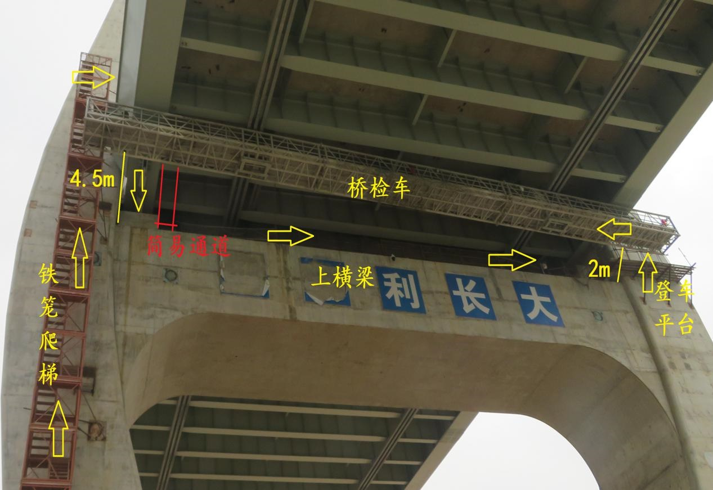
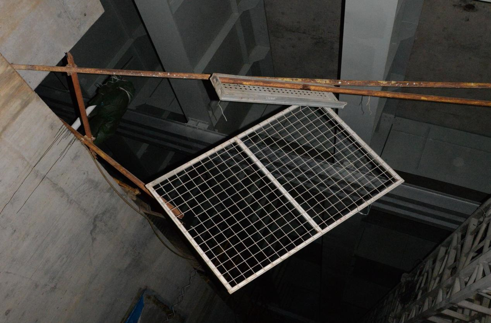
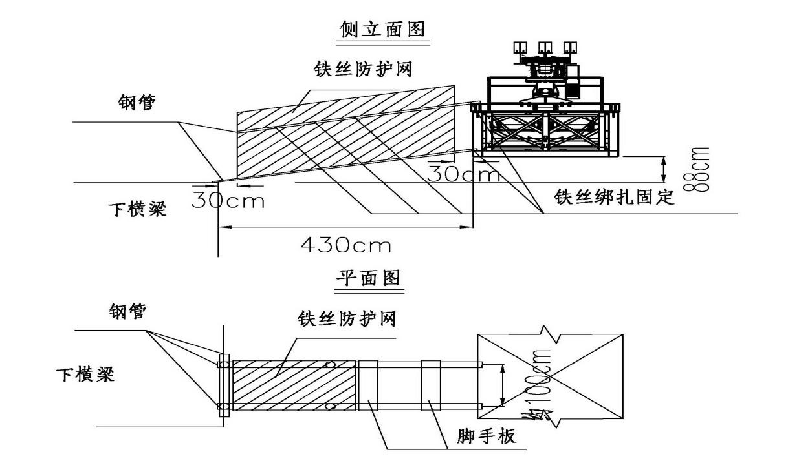

珠海洪鹤大桥项目“1·3”高坠事故调查报告
2021年1月3日17时16分许，珠海市洪鹤大桥3#桥墩处发生一起高处坠落事故，造成一人死亡。近日，珠海市横琴新区管委会公布了此起高坠事故调查报告。
一、基本情况
（一）事故工程基本情况
珠海市洪鹤大桥工程，总体呈东西走向，起点位于珠海市香洲区南屏镇洪湾，终点与江珠高速延长线及鹤港高速相交、设鹤洲南互通。该桥梁桥面为双向六车道高速公路，全长约9.654KM，桥面宽33m，设计时速为100km/h。该桥梁于2016年11月开始施工建设，2020年12月8日交工验收，2020年12月15日全线通车运营。
洪鹤大桥建设单位为珠海洪鹤大桥有限公司（以下简称“洪鹤大桥公司”），施工许可审批单位为广东省交通运输厅。工程建设期间分4个土建标段施工。3#桥墩位于洪鹤大桥工程HHTJ1标段内（以下简称“HHTJ1标段”），施工总承包单位为保利长大工程有限公司（以下简称“保利长大公司”）。根据洪鹤大桥公司和保利长大公司签订的《广东省珠海市洪鹤大桥工程HHTJ1标段施工承包合同》约定，“本协议书在承包人提供履约担保后，由双方法定代表人或其委托代理人签署并加盖单位章后生效。全部工程完工后经交工验收合格、缺陷责任期满签发缺陷责任终止证书后失效。”洪鹤大桥“1.3”高处坠落事故发生时间在工程缺陷责任期内，处于合同执行期间。
（二）事故相关单位基本情况
1.建设单位：洪鹤大桥公司。类型：有限责任公司（法人独资），住所：珠海市人民西路963号5楼510室，法定代表人：林全富，成立日期：2015年11月17日，统一社会信用代码：91440400MA4UJUK8XH。公司主要负责洪鹤大桥及其配套设施的投资、融资（不含工商登记前置审批项目）、建设及运营管理。
2.施工总承包单位：保利长大公司。类型：有限责任公司，住所：广州市天河区广州大道中942号，法定代表人：刘刚亮，成立日期：1986年12月5日，统一社会信用代码：914400001903345106。注册资本：260779.464504万，主要经营范围和资质等级为公路工程施工总承包特级、工程设计公路行业甲级、公路路基工程专业承包壹级、公路路面工程专业承包壹级、桥梁工程专业承包壹级、隧道工程专业承包壹级等。安全生产许可证编号：（粤）JZ安许证字〔2017〕010206延。该公司HHTJ1标段项目经理：詹元林。
3.施工专业分包单位：武船重型工程股份有限公司（以下简称“武船重工公司”），类型：股份有限公司（非上市），住所：新洲区阳逻镇潘龙路（117号），法定代表人：杨宏刚，成立日期：1999年4月13日，统一社会信用代码：914201007145511030。注册资本：人民币贰亿贰仟叁佰万元整。经营范围：各类钢结构制造安装；桥梁工程施工；桥梁检修设备设计制造、安装；防腐保温涂装工程施工等。安全生产许可证编号：（鄂）JZ安许证可[2005]000456。该公司HHTJ1标段项目负责人：李立明，常务副经理：陶晓明。
4.施工劳务分包单位：江门市泽星钢结构工程有限公司（以下简称“江门泽星公司”），类型：有限责任公司（自然人投资或控股），住所：江门市新会区崖门镇黄冲村三斗冲（土名），法定代表人：谢庆，成立日期：2008年2月29日是，统一信用代码：914407056715749963。注册资本：人民币伍仟贰佰捌拾万元。经营范围：钢结构工程专业承包；承接建筑物结构补强、防腐保温工程等。安全生产许可证编号：（粤）JZ安许证字[2020]131571延。该公司HHTJ1标段项目负责人：夏武。
5.监理单位：广东华路交通科技有限公司（以下简称“广东华路科技公司”），类型：有限责任公司，住所：广东省广州市白云区丛云路399号，法定代表人：陈少文，成立日期：2002年3月20日，统一社会信用代码：914400007361952934。注册资本：1300万元人民币。资质等级：公路工程甲级。证书编号：交监公甲第099—2006号，业务范围：在全国范围内从事一、二、三类公路工程、桥梁工程、隧道工程项目的监理业务。该公司HHTJ1标段项目负责人：蔡建伟。
（三）工程承包（分包）情况
2016年9月28日，保利长大公司中标洪鹤大桥工程HHTJ1标段。2016年10月25日，洪鹤大桥公司与保利长大公司签订了《广东省珠海市洪鹤大桥工程HHTJ1标段施工承包合同》（合同编号：JT-HH-2016-51，以下简称“《施工承包合同》”），《施工承包合同》内包括《安全生产合同》。2016年12月28日，洪鹤大桥HHTJ1标段正式开工。
2018年6月21日，保利长大公司组织开展钢梁制造专业分包，洪鹤大桥公司按照合同约定及相关制度，对其招标资质进行了审批，由保利长大公司于2018年9月30日下午14时组织了钢梁制造专业开标，洪鹤大桥公司和监理合约管理人员对开标过程进行了监标，中标单位为武船重型工程股份有限公司，其专业分包合同和安全生产合同于2018年10月15日签订，2018年11月1日报洪鹤大桥公司备案。合同名称为《广东省珠海市洪鹤大桥工程HHTJ1标段钢梁制造专业分包合同》（合同编号：MBEC5-，以下简称“《钢梁分包合同》”）。《钢梁分包合同》内包括《安全生产合同》。
2019年12月7日，武船重工公司与江门泽星公司签订《珠海市洪鹤大桥HHTJ1标钢梁制造工地施工合同》，合同签订程序按照《中华人民共和国招标投标法》的规定进行，符合相关法律规定。双方签有《洪鹤大桥施工安全环保协议书》。
二、事故经过及救援情况
（一）事故发生经过
2021年1月3日15时许，江门泽星公司谭春华（死者）与班组人员陈星星、张春桃、张春华从地面通过安全爬梯到洪鹤大桥3#桥墩桥面，然后通过梯子下至桥墩下横梁平台做桥底泄水管的管撑安装前准备工作（下横梁面距离底部水泥承台面高度为29.8米）。谭春华、陈星星、张春桃在桥墩下横梁平台上收拾施工材料，完善临边防护设施；张春华从下横梁平台西南侧的登车平台进入到桥梁检修车（以下简称“桥检车”）收拾整理材料。为了下一步施工便利，谭春华带领其他三人利用在下横梁平台上收集到的钢管、钢丝防护网、铁丝和铁脚手板等材料，在下横梁平台靠近北侧塔柱位置与桥检车之间搭设了一条临时简易通道。16时许，武船重工公司安全员钱远景到3#桥墩下横梁平台巡查时发现此临时简易通道（已搭建成型），当场口头制止四人继续搭设，并下发《安全隐患整改通知单》要求谭春华等人于1月4日前拆除该通道。
17时15分许，谭春华、陈星星、张春桃解下安全带准备下桥下班，谭春华（只佩戴安全帽）说了句“取东西”，在下横梁桥面折返至临时简易通道，当行走在通道上时，该通道突然发生解体破坏，谭春华情急下双手抓住钢丝防护网，身体悬空挂在通道下部。谭春华挣扎着想往上爬，位于桥检车上的工人张春华见此情景急忙向谭春华抛绳索施救，尝试了两次，未能有效。17时16分许，谭春华因体力不支，坠落于3#桥墩底部水泥承台面。

（二）应急救援情况
在武船重工公司办公室（3#桥墩附近）里的陶晓明、何治国及3#桥墩附近的钱远景等人，听到现场发出的巨大响声后急忙跑到事发现场。陶晓明立即拨打了120电话，从下横梁平台跑下来的工人陈星星拨打了110报警。大约20分钟后，120医护人员及法医赶到现场，现场证实谭春华已死亡。
接到事故报告后，区安监局立即启动应急程序，调集事故调查专家赶赴事发现场，迅速调查了解事故情况，会同市公安局拱北口岸分局洪湾派出所等有关部门开展现场勘验、调查取证和处理善后事宜等，并按照相关规定及时上报信息。市交通运输部门立即要求该施工现场停工整顿。各部门现场处置及时、有效，未发生二次伤害和群体事件。
三、事故伤亡人员、直接经济损失及善后处理情况
（一）人员伤亡情况
此次事故共造成1人死亡。
死者：谭春华，男，汉族，初中学历，1975年1月22日出生，身份证号：430223197501228036。身份证住址：湖南省攸县谭桥街道大和村场上组场上044号。2020年1月1日加入江门泽星公司，铆工岗位，已签订劳动合同。2020年12月25日被派遣到洪鹤大桥项目HHTJ1标段执行桥底泄水管的管撑安装工作，担任本次施工队伍的带班小组长。依据珠海市公安局拱北口岸分局刑事侦查大队出具的《居民死亡医学证明（推断）书》编号：S442020019660，死亡原因为：符合生前高坠致脑损伤死亡。
（二）直接经济损失及善后处理情况
此次事故造成直接经济损失约190万元人民币（包括丧葬费、一次工亡补助金、直系亲属抚恤金、治丧费等一次性补偿款项）。
2021年1月5日，江门泽星公司与死者家属达成赔偿协议，该起事故善后工作已妥善处理。
四、现场勘验情况
据现场勘验和调查了解，洪鹤大桥3#桥墩的西北侧有一安全爬梯供施工人员上下桥面使用，桥面通过梯子可下到下横梁平台。下横梁平台长为36.97米，宽约为8米。梁面距下部承台面高度为29.8米，平台西南侧设有上桥检车的通道。事发时，桥底检修车停靠在3#桥墩西侧。谭春华等人为图下一步施工便利，组织人员搭建临时简易通道。该通道搭建于桥墩下横梁平台西北侧与桥检车之间。一端搭在下横梁平台面，另一端靠在桥检车底部钢架护栏上。该通道长约4.5米，宽约1米，底部用两根钢管做支撑，另用一根钢管与扣件横向固定宽度，通道底部用钢丝防护网和铁脚手板铺设且未满铺，两边设高约1.0米的钢丝安全防护网护栏。除下横梁端用扣件横向固定底部宽度的部位外，其余部位全部采用铁丝捆扎方式固定。搭建材料全部为下横梁平台上原有的闲置物料（钢管材质为Q235的钢材，钢管直径为48毫米；钢防护网材质为Q235低碳钢丝，长1.0米×宽1.5米），材料质量与结构均不符合搭设临时简易通道的安全要求。


现场调查了解工程交工验收后洪鹤大桥的实际情况：2020年12月16日，洪鹤大桥公司向洪鹤大桥各参建单位下发了《关于做好缺陷责任期安全工作的通知》，对现场安全管理提出了工作要求，要求各参加单位严格执行安全制度、制定安全防护措施、严格落实现场安全管理，并对相关单位安全生产工作落实情况进行了阶段性提醒；2020年12月28日，广东华路科技公司洪鹤大桥总监办向HHTJ1-HHTJ4、HHLM标项目经理部下发了《关于要求严格加强洪鹤大桥收尾工程现场施工管理的通知》（洪鹤大桥总监〔2020〕141号）文件，对洪鹤大桥通车后的遗留工程施工提出了要求；2020年12月29日，保利长大公司传达学习了洪鹤大桥公司和广东华路科技公司洪鹤大桥总监办文件，并下发了《转发〈关于要求严格加强洪鹤大桥收尾工程现场施工管理的通知〉及要求做好安全质量管理的通知》（洪鹤一标〔2020〕30号），明确要求下属施工队伍对所有收尾工程在开工前必须上报相应施工方案并经审核同意后方可进行施工作业。武船重工公司12月30日签收了该文件。2020年12月25日，谭春华、陈星星、张春桃、张春华（以下简称“谭春华班组”）被江门泽星公司派遣到洪鹤大桥项目HHTJ1标段工作。2020年12月26日，谭春华班组接受了保利长大公司岗前安全培训与技术交底。因作业原材料未到场，4人一直未进入现场作业。1月3日，谭春华班组第一次进场作业，进场前未向保利长大公司上报施工方案。
五、事故原因分析
（一）直接原因
谭春华（死者），安全意识淡薄，作为带班小组长违章指挥班组人员利用下横梁平台上的闲置材料在下横梁与桥检车之间违规搭设简易通道。为了从下横梁面到桥检车少走一段距离，在明知该通道存在安全隐患需要拆除的情况下，不采取任何安全防护措施使用该通道，造成通道解体，自己坠落死亡是事故发生的直接原因。
（二）间接原因
1.陈星星、张春桃、张春华，在明知3#桥墩下横梁平台西南侧设有上桥检车的通道及登车平台的情况下，为了下一步施工方便，协助谭春华完成了下横梁与桥检车之间简易通道的搭设；在被武船重工公司告知该通道存在安全隐患需要拆除时没有立即拆除；当发现谭春华走临时简易通道时没能有效及时制止。
2.江门泽星公司，安全生产主体责任落实不到位，安全风险和隐患排查整改不到位。一是在施工总承包单位保利长大公司提出关于严格加强收尾工程现场施工管理的要求后，没有遵照执行。没能及时发现和制止工人在未申报开工的情况下开始桥底泄水管的管撑安装准备工作；二是未教育和督促工人严格执行安全生产规章制度，工人安全意识淡薄，违规搭建临时简易通道，作业时未按要求佩戴安全带等安全防护用品等；三是未向工人如实告知作业场所和工作岗位存在的危险因素、防范措施以及事故应急措施；四是未派遣具备高处作业资格的人员上岗。
3.武船重工公司，未充分履行安全管理职责。一是检查中发现临时简易通道重大隐患后，没有现场监督其立即整改拆除；二是违反保利长大公司和广东华路科技公司关于洪鹤大桥收尾工程现场施工管理要求；三是对进场人员资格审查不严，事发当天到下横梁平台作业的谭春华、陈星星、张春桃、张春华4人均不具备高处作业资格。
六、事故性质认定
综上所述，调查组认定，洪鹤大桥3#桥墩“1·3”高处坠落事故是一起一般生产安全责任事故。
七、对事故责任单位及有关责任人员的处理建议
（一）对事故有关责任单位的处理建议
1.江门泽星公司
违反《中华人民共和国安全生产法》第三十八条，未严格落实施工现场安全措施，没能及时发现和制止工人在未申报开工的情况下开始桥底泄水管的管撑安装准备工作，未采取技术、管理措施，及时发现并消除事故隐患。
违反《中华人民共和国安全生产法》第二十五条，对现场作业人员培训教育不到位，现场作业人员违章作业，违反操作规程。
违反《中华人民共和国安全生产法》第四十一条，施工前未向从业人员告知作业场所和工作岗位存在的危险因素、防范措施以及事故应急措施。
违反《中华人民共和国安全生产法》第二十七条、《特种作业人员安全技术培训考核管理规定》，对高处作业的人员资格审查不严。
对事故的发生负有责任，建议由香洲区应急管理局依据《中华人民共和国安全生产法》《生产安全事故报告和调查处理条例》等法律法规规定进行立案调查，追究其相关法律责任。
2.武船重工公司
违反《中华人民共和国安全生产法》第三十八条，未充分履行安全管理职责，未采取技术、管理措施，及时消除重大安全隐患，未严格落实保利长大公司和广东华路科技公司关于洪鹤大桥收尾工程现场的施工管理要求。
违反《中华人民共和国安全生产法》第二十七条、《特种作业人员安全技术培训考核管理规定》，对进场人员安全资格审查不严。
对事故的发生负有责任，建议由香洲区应急管理局依据《中华人民共和国安全生产法》《生产安全事故报告和调查处理条例》等法律法规规定进行立案调查，追究其相关法律责任。
（二）对事故有关责任人员的处理建议
1.谭春华，死者，江门泽星公司工人，违反《中华人民共和国安全生产法》第五十四条、第五十五条，违章指挥班组人员违规搭设临时简易通道，在明知该通道存在重大安全隐患需要拆除的情况下，在不采取任何安全防护措施的情况下，冒险走该通道，导致自身坠落死亡，对该起事故应负直接责任，鉴于其在事故中已经死亡，不再追究其责任。
2.谢庆，江门泽星公司法定代表人，违反《中华人民共和国安全生产法》第十八条，未认真督促､检查本单位的安全生产工作，及时消除生产安全事故隐患；未督促施工现场人员认真履行安全生产工作职责，遵守项目关于收尾工程施工的相关管理规定，未依法履行主要负责人安全生产管理职责，对该起事故负有责任，建议由香洲区应急局依据《中华人民共和国安全生产法》《生产安全事故报告和调查处理条例》等法律、法规规定进行立案调查，追究其相关法律责任。
3.李立明，武船重工公司项目经理，违反《中华人民共和国安全生产法》第十八条，未认真督促､检查本单位的安全生产工作，及时消除生产安全事故隐患；未督促施工现场人员认真履行安全生产工作职责，遵守项目关于收尾工程施工的相关管理规定，对该起事故负有责任，建议由香洲区应急局依据《中华人民共和国安全生产法》《生产安全事故报告和调查处理条例》等法律、法规规定进行立案调查，追究其相关法律责任。
4.钱远景，武船重工公司安全员，违反《中华人民共和国安全生产法》第四十三条，未认真履行安全生产工作职责，虽在检查中发现谭春华等人搭设的临时简易通道，但没有现场监督其拆除，也未将该情况及时上报，对该起事故负有责任，建议市交通运输部门依据《中华人民共和国安全生产法》第九十三条规定对其进行处理。
5.陈星星、张春桃、张春华，江门泽星公司工人，违反《中华人民共和国安全生产法》第五十六条，协助谭春华完成了下横梁与桥检车之间简易通道的搭设，且三人不具备高处作业资格。建议江门泽星公司对三人进行安全教育，清退出HHTJ1标段施工现场。
司法机关在后续调查中发现上述人员和其他人员涉嫌犯罪的，建议按照司法程序进行处理。
八、事故防范和整改措施
（一）武船重工公司、江门泽星公司一要进一步落实企业安全生产主体责任，建立健全安全生产规章制度及操作规程；二要加强对项目的安全管理，提高管理人员的履职能力；三要加强对工人的安全培训教育、安全技术交底、安全检查力度，及时消除施工现场安全隐患；四要对存在危险性的工序，安全管理人员要和施工人员同步上下班，全程监管，杜绝无证上岗和违章作业行为。
（二）珠海交通集团和洪鹤大桥项目各参建单位要深刻吸取事故教训，切实履行企业的安全生产主体责任，严格加强收尾工程现场的施工管理工作。要牢固树立“发展决不能以牺牲安全为代价”的红线意识，切实把习近平总书记关于安全生产的重要指示精神落到实处，按照“一线三排”事故隐患治理要求，建立健全严格完善的安全责任体系，规范作业规程的管理。加强对作业现场的安全管理和安全检查，及时发现和整治安全隐患，切实落实各项安全措施。同时，强化作业人员的安全教育培训，提高加强作业人员的安全隐患风险防范意识，坚决制止违章作业，杜绝同类事故再次发生。
（三）建议行业监管部门市交通运输局吸取事故教训，约谈珠海交通集团、洪鹤大桥公司、广东华路科技公司、保利长大公司，认真分析研究此起事故，加强洪鹤大桥项目的安全监督管理工作。同时，加强对金海大桥、轨道交通等省管、市管项目的安全监管。强化安全监管手段，加强安全检查巡查，对检查中发现的违法违规行为和各类隐患问题，跟踪督办企业的隐患整改情况，保障各项安全措施落实到位。
原文编辑: EHS资讯
原文链接: https://ehsinfo.cn/2021/03/06/珠海洪鹤大桥项目高坠事故调查.html
版权声明: 转载请注明出处(必须保留作者署名及链接)